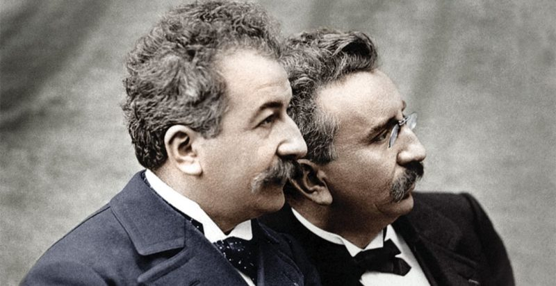
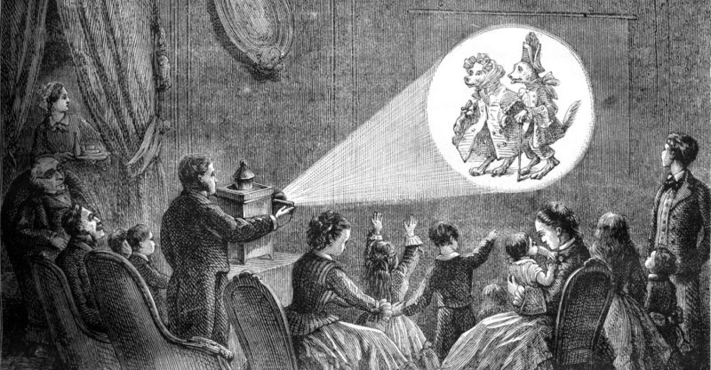
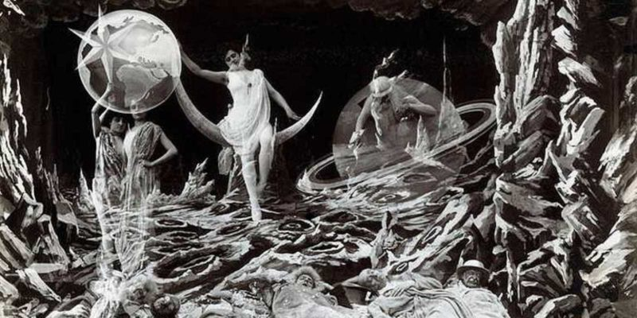
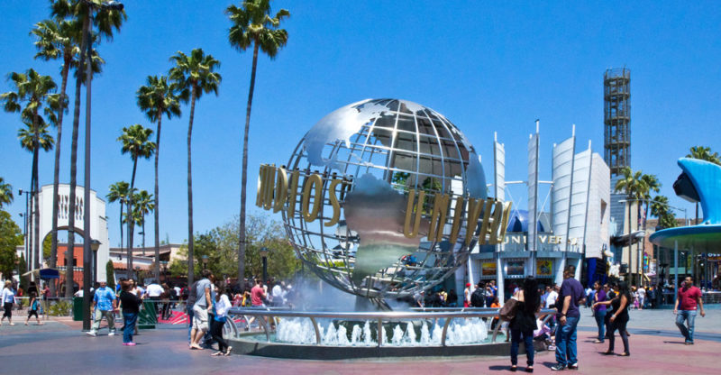

Origen del cine
La primera proyección fílmica exhibida al público fue obra de los hermanos Lumière.
El origen formal del cine se remonta al siglo XIX, con la invención de la fotografía. Con ella se dieron los primeros pasos hacia la generación de la impresión del movimiento, gracias a la persistencia retiniana (la mínima perduración de las imágenes vistas en la retina humana cuando se proyectan a gran velocidad) y al principio de la cámara oscura.
La primera proyección fílmica exhibida al público tuvo lugar en París el 28 de diciembre de 1895. Consistía en una proyección de la salida de unos obreros de una fábrica en Lyon. Fue grabada por los célebres hermanos Lumière, quienes en un año produjeron más de 500 películas de no más de un minuto de duración. A esa primera proyección acudieron apenas 35 personas, pero la voz se corrió muy rápidamente en París y pronto hubo multitudes deseosas de ver el nuevo invento, anunciado como Cinématographe Lumière. También es célebre la anécdota de que una de sus primeras proyecciones involucró la filmación frontal de un tren que llegaba a la estación. El público asistente, temeroso de que el tren los atropellara, huía de la sala.
Antecedentes del cine
La linterna mágica simulaba el movimiento con imágenes rotativas.
Para que la invención de los Lumière pudiera existir, numerosos descubrimientos tuvieron que darse previamente. Algunos incluso se remontan al siglo XVI, cuando el sacerdote alemán Atanasio Kircher inventó la linterna mágica, un aparato de imágenes rotativas que simulaba el movimiento y servía para entretener a los niños. En el siglo XVIII, Gaspard Robert popularizó la proyección pública de imágenes pintadas sobre placas de cristal, que bautizó como Fantasmagories. En el siglo XIX hubo más experimentos con imágenes en movimiento. Uno de los más importantes fue el estroboscopio (1833) de Simon von Stampfer que permitía ver a velocidades muy lentas (o quieto) un objeto que giraba sobre sí mismo. En 1874 fue inventada la fotografía. Basándose en este invento, el francés Jules Janssen creó el “revólver fotográfico”, un antepasado de la cámara fotográfica de hoy. Poco después, el estadounidense Edward Muybridge logró reproducir el galopar de un caballo a partir de fotografías tomadas en serie de su carrera. Pero el cine como tal sólo fue posible cuando Thomas Alva Edison inventó la bombilla incandescente en 1889, y luego el kinetógrafo, un aparato que sincronizaba el sonido y la captura de una imagen, intentando capturar el momento vivido. Este último dio pie a la posterior inclusión del audio en el cine.
La magia de Georges Méliès
Méliès creaba historias de ficción dotadas de efectos especiales.
Uno de los grandes precursores del cine fue Georges Méliès. Debido al entusiasmo que le causó, decidió invertir en la tecnología de los hermanos Lumière. Propuso importantes innovaciones que cambiaron el carácter naturalista, realista y pasivo de las grabaciones de los Lumière. Por el contrario, Méliès creaba historias de ficción dotadas de efectos especiales, escenografías de cartón, maquillaje y saltos en la edición. Se trataba de fábulas infantiles y relatos fantásticos, gracias a los que aún hoy es recordado como el “mago del cine”. Entre ellas estuvieron “Viaje a la luna” (1902) y “El viaje imposible” (1904), inspiradas en los libros de Julio Verne.
El cine a color
La invención del cine a color fue una preocupación de los pioneros del cine, que como Méliès procedían a colorear uno por uno los fotogramas de sus filmes. Era una técnica muy poco eficaz y costosa. Sin embargo, en 1915 apareció Technicolor, una compañía que trabajó durante años en la producción de sistemas fílmicos a base de colores primarios, que permitieron inicialmente insertar secuencias de color en filmes de blanco y negro. Recién en 1929 se proyectó el primer largometraje a colores: On with the Show!
En 1932 se incorporó un tercer color a la paleta y se logró un sistema en base a los tres primarios, que daba grandes resultados. Fue empleado por Disney en sus animaciones. Finalmente este sistema fue reemplazado en 1950 por el propuesto por la empresa Eastman Kodak, mucho más sencillo y eficaz.
Hollywood y la meca del cine
En Hollywood nacieron algunos de los grandes estudios fílmicos estadounidenses.
El éxito del cine en los Estados Unidos fue arrollador. Thomas Alva Edison, quien era ya un poderoso empresario nacional, intentó quedarse con la propiedad intelectual del cinematógrafo. Esto le causó enormes tensiones con los productores de cine independientes, llegando el conflicto a juicios e incluso a los disparos. Como consecuencia, muchos creadores emigraron de Nueva York hacia un pequeño poblado cerca de la frontera con México, llamado Hollywood. Allí nacieron los que aún son algunos de los grandes estudios fílmicos estadounidenses, como son 20th-Century Fox, Paramount, Universal y Metro-Goldwin-Mayer Los estudios no sólo producían y financiaban las películas, sino que también controlaban íntegramente la distribución. En poco tiempo lograron alzarse como la “meca del cine” estadounidense y dando inicio al llamado “Star System” de las grandes celebridades del cine.